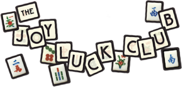

Career Goals
My mother always had major expectations for me, even though I didn't have them for myself. She wanted me to become a child prodigy, a piano player, go to college, and become some famous and revered paragon of success. I think by pushing my at a young age, all my
mother really achieved was making me more headstrong and subborn. After some early failures, I knew I wasn't destined for major success, and I knew I'd have to settle for something much less. I could never be the very daughter my mother wanted.
Now that I realize this, that all my mother wanted was for me to be successful, I have a newfound confidence in myself and hope to achieve great things. Copywriting is definitely not my passion, nor do I want to stay in this field for the rest of my life. I want to
give myself a chance to explore different fields and professions and find my true passion. Right now, I'm interested in going back to college to get a business degree, and opening up my own company. I don't just want to make my mother's memory proud, but I want to make myself proud.
The Joy Luck Club
The Joy Luck Club was first formed by my mother in Kewilin with 3 other women to escape the despondency there during the Japanese invasion. My mother recounted that people were impoverished, anxious of an attack, and sick. Instead of accepting the depression that had overcome others,
my mother did her best to find make the best in the situation with the Joy Luck Club. The women would play mah jong, host parties, and prepare special dyansyin food. They enjoyed their luxuries sparingly to raise their spirits.

When my mother left for America, she maintained the tradition of the Joy Luck Club, only this time with the Jong's, St. Clair's, and Hsu's. They would to gather together at one's home, prepare food, discuss investments, and eventually play mah jong.
“Your mother was the best, like a pro”
– Auntie An-mei (34)
Now that my mother is gone, the other members on the Joy Luck Club want me to take her place. I know I'll never be as good as she was, but I'll definitely try. I've only played Jewish mah jong before and not much of traditional Chinese mah jong, so learning
it will be tough, especially when competing against the others in the club.
My Chinese Essence
Another goal of mine is to reconcile and learn more about my sisters, Wang Chwun Yu and Wang Chwun Hwa Chwun, in China. Talking about them was a delicate subject for my mother, but now that I've found and met them in China, I hope to make memories with them
and tell them about our mother. I feel I've lost touch with the Chinese part of me, and by traveling to China and learning more about my sisters, I want to understand to appreciate my culture, just as my mother would have wanted for me.